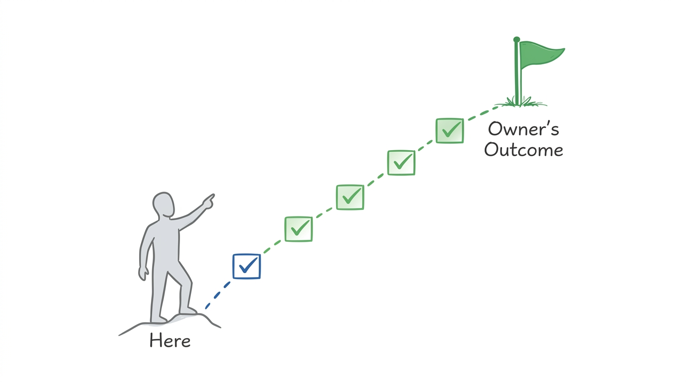
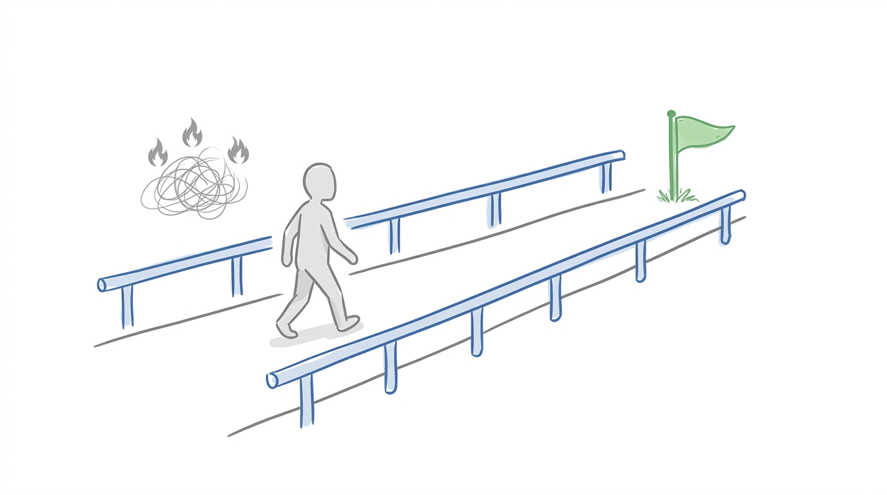
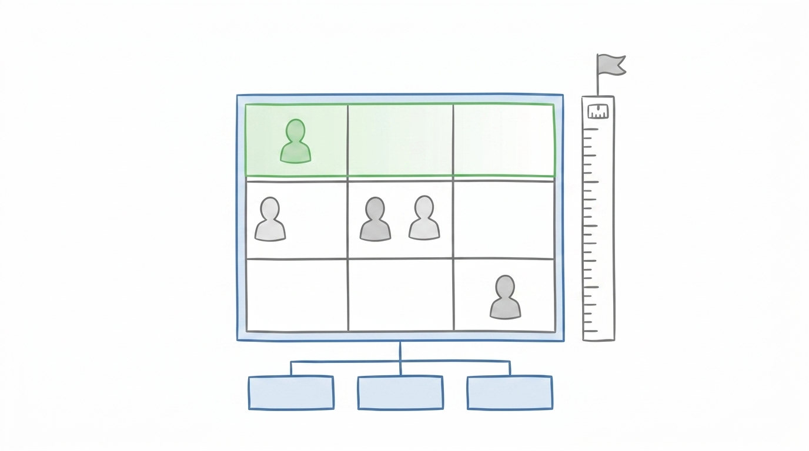
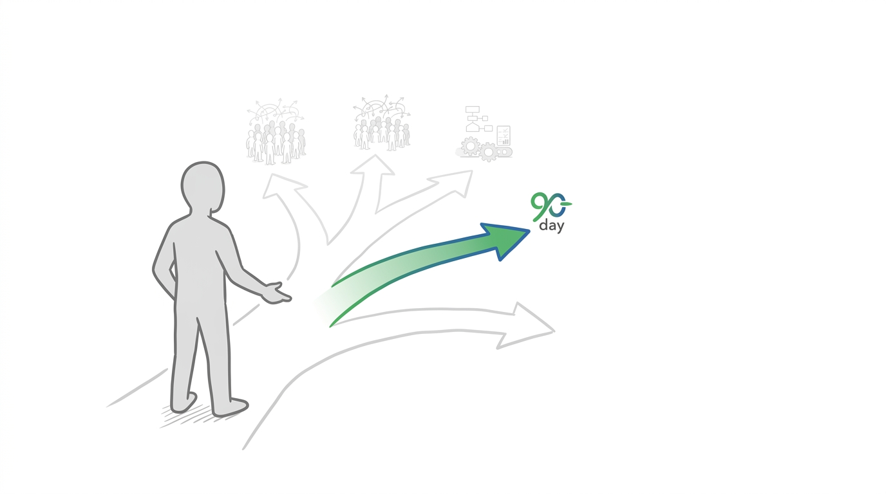

I am in business because I want what you personally want, and I will achieve it by specific date, as measured by 1 to 3 measures.

The edges you protect on the way to the goal.

Where you are. Where you want to be. The gap between.
| Dimension | Goal | Reality | Gap |
|---|---|---|---|
| Time | hours per week, doing the right work | hours per week, doing what | the delta and the shape of it |
| Money | revenue, profit, personal income | today's numbers | pricing, volume, or structural |
| Role | what you will be doing | what you are doing now | what is hardest to let go |
| Team | people who run it without you | who is on the team and what they own | what breaks if you disappear for 30 days |
| Risk | exposure you can carry | debt, commitments, cash position vs floor | tension with closing other gaps |
| Value / Exit | enterprise value and by when | what a buyer sees today | what makes the business sellable |

Close one gap at a time. The other gaps will still be there in 90 days.
